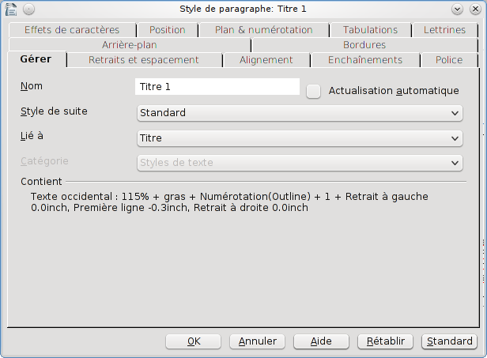

Ce tutoriel s'adresse aux personnes qui veulent s'attaquer à OpenOffice, mais aussi à celles qui sont déjà habituées. Je ne vais pas revenir sur les bases du traitement de texte. Tout ce que je vais dire ici sont des trucs que j'ai glanés avec le temps, et qui permettent de mettre en page de longs documents (comme des thèses ou des rapports) facilement et sans prise de tête.
Je commencerai en expliquant rapidement comment obtenir OpenOffice.org, puis je donnerai une étendue de ce qu'il est possible de faire avec les styles. Finalement, je donnerai quelques autres petits trucs qui permettent de gagner du temps sur de longs documents.
Si vous en avez assez de payer pour taper vos textes, de mettre à jour vos logiciels de bureau régulièrement sous peine de ne jamais pouvoir ouvrir les ".docx" envoyés par vos collègues, alors vous serez tenté d'essayer OpenOffice.org.
Changer de logiciel fait toujours un peu peur, au début. Et vous perdrez du temps, le temps de vous habituer. Mais au final, OpenOffice.org marche tout aussi bien que Microsoft Office, et c'est gratuit ! :p
Tout d'abord, qu'est-ce-que c'est qu'OpenOffice?
Tout d'arbord, son vrai nom, c'est OpenOffice.org, ou OOo pour les intimes. (C'est important, ça fait gagner du temps pour les recherches Google ! :-° )
Ensuite, OOo, c'est une alternative Open Source aux logiciels de bureau payants, tels que Microsoft Office.
C'est quoi "Open Source" ?
C'est une excellente question, quoiqu'un peu compliquée pour ce tutorial. Si vous voulez une bonne explication, je vous conseille d'aller voir Wikipedia. Le principal, dans notre cas, c'est que c'est gratuit, et mis à jour régulièrement par tout un tas de gens qui s'y connaissent bien mieux en programmation que vous et moi. :lol:
Je vous ai convaincus ? Vous voulez essayer ? N'hésitez pas, c'est gratuit ! :lol: Et compatible avec Word. Ça veut dire que vous pouvez ouvrir des documents et les enregistrer en .doc (ou .docx). Donc vous pourrez toujours revenir sous Word si vous n'aimez pas !
Bon, alors dirigez-vous sur le site d'OOo pour télécharger une version appropriée à votre système. Si vous avez peur de vous perdre dans tout cet anglais, vous pouvez trouver la dernière version française ici. Et si vous téléchargez la version anglaise, vous pouvez toujours ajouter la version française en téléchargeant le pack langue correspondant, en l'installant, puis en le modifiant dans Tools > Options > Language Settings > Language > User Interface.
Changer la langue (après avoir installé le pack de langue correspondant !)
Sachez qu'OOo se compose de Writer (équivalent de Word), Calc (équivalent d'Excel), Impress (équivalent de PowerPoint), Draw (équivalent de... Je ne sais pas, je n'ai jamais utilisé!) et Base (pour faire des bases de données. Important à installer si vous voulez faire des bibliographies !). Vous pouvez n'installer que ce dont vous avez besoin. Bien sûr, c'est gratuit de toutes façons... :-°
Voilà, maintenant, je vous laisse jouer avec Writer pendant un moment. Vous verrez, c'est presque tout comme Word. Si vous êtes perdus, n'hésitez pas à venir lire la suite de mon tuto, peut-être que ça vous aidera. Sinon, Google est votre ami ! Il y a plein de gens qui posent des questions sur OOo, et probablement autant de gens qui y répondent un peu partout sur Internet.
Si jamais vous avez des connaissances en programmation de sites Internet, vous devez savoir à quel point le CSS fait gagner du temps. Les styles, c'est le CSS de Writer.
Hé ! Mais moi, je fais pas de programmation CS-truc, là ! Ça veut dire quoi ce charabia ?
De manière simple, les styles permettent de définir une mise en forme qui sera respectée par tout le texte qui partage la même mise en forme. Ça veut dire que si vous voulez que tous vos titres principaux soit en gras et de taille 14pt, vous définissez ça une fois pour toutes, et tous vos titres prendront ce format d'un clic !
Et c'est pas tout ! L'autre énorme avantage, c'est que si vous décidez après avoir tapé vos 450 pages que finalement, 14pt, c'est un peu petit, au lieu de changer vos 15 titres un par un, vous changez votre style, et tous les titres prendront le nouveau format désiré !
Imaginez le temps gagné ! Et ça, ce n'est que la partie émergée de l'iceberg. On verra pour la partie immergée plus tard ! ;)
À l'attaque !
Tout ce baratin c'est bien joli, mais on n'est pas plus près de savoir utiliser les styles, nous !
Et bien c'est parti ! :pirate:
Tout d'abord, prévoyez un texte. C'est pas obligatoire, vous pouvez utiliser les styles au fur et à mesure que vous écrivez, mais en l'occurrence, ce serait plus rapide avec un document. Imaginons maintenant que nous écrivions un document sur la reproduction des poulpes. Nous aurions le plan suivant: 1. Les poulpes 1.1 Leur habitat 1.2 Leur physionomie 2. Reproduction 2.1 Rituel amoureux 2.2 Mécanismes de reproduction
Avec bien entendu, du texte dans chaque partie. Il y a ici deux niveaux de titres. Nous allons commencer par leur attribuer un style. Pour cela, il y a deux manières, qui commencent toutes deux par cliquer n'importe où sur la ligne à laquelle on veut attribuer le style :
Ouvrir le menu déroulant affichant normalement "Standard", et sélectionner le style désiré.
Aller dans Format > Styles et Formatage. Une nouvelle fenêtre s'ouvrira, avec plus de choix que dans la première option. Double-cliquer alors sur le style désiré attachera le texte au style.
Cliquer sur "Styles et Formatage" ouvre la fenêtre de droite
Hé ! Mais on mets quoi comme style ? Si je mets "Titre 1", c'est tout moche pas beau ! Comment je fais ?
Et bien on met "Titre 1" pour notre premier niveau de titres, et "Titre 2" pour le deuxième niveau. Effectivement, ça ne va pas être beau. Pour l'instant !
Maintenant qu'on a nos styles assignés à notre texte, on peut aller jouer avec. Vous vous rappelez quand je vous ai dit comment on ouvrait la fenêtre "Styles et Formatage" ? Et bien c'est l'heure de l'ouvrir ! Bien pour vous si vous aviez choisi cette méthode ! Sinon, c'est dans Format > Styles et Formatage. Trouvez maintenant dans cette fenêtre notre "Titre 1". Un petit coup de clic droit, puis cliquez sur Modifier.... La nouvelle fenêtre qui va s'ouvrir va ressembler à ça :

Pas de panique ! C'est ça qui va vous permettre de modifier l'apparence de votre texte, en l'occurrence de Titre 1. Dans l'onglet Gérer, vous trouverez ce qui définit le style en général:
Son Nom, tout d'abord, au cas où vous vouliez lui donner un nom plus explicite.
Style de Suite définit le style qui suivra Titre 1. Par défaut, c'est "Corps de Texte". Alors que par défaut, le texte dans Writer est "Standard". Si vous le changez, pensez à changer le style du corps de texte dans votre document pour rester le même. En effet, changer cette entrée n'agit pas sur le document. Elle n'agit que si vous commencez une nouvelle ligne après votre style. Le texte suivant sera alors automatiquement défini avec le style choisi dans Style de Suite. Exemple : Nous pourrions ici définir Style de Suite comme "Titre 2", puisqu'à priori, la plupart de nos Titre 1 sont suivis par un Titre 2. Ceci fait, si on décide d'ajouter à notre document sur les poulpes une Conclusion, on peut passer "Conclusion" en "Titre 1". En tapant la touche entrée pour aller à la ligne, on sera automatiquement en "Titre 2". Bien entendu, si l'on ne veut pas de sous-titre dans notre conclusion, on peut changer le style de cette nouvelle ligne pour "Standard" ou "Corps de Texte".
Lié à définit de quel style notre style descend. Tout ce que vous ne changerez pas sera similaire au style auquel il est lié, même si vous changez ensuite le style parent !. Attention à ce que vous faites : si vous changez ensuite un attribut du style parent que vous aviez laissé par défaut pour votre style, votre style prendra lui aussi la nouvelle valeur. Il est donc conseillé de toujours choisir un style correspondant à ce que l'on veut faire. Ainsi, Titre pour un titre... Cela est cependant toujours utile pour créer un nouveau style sans avoir à tout définir : On peut comme çá copier un autre style !
Catégorie n'est disponible que si vous créez votre propre style. Vous pouvez définir un style pour différentes applications, comme un style pour les listes ou un style HTML. C'est surtout pour que les styles soient rangés de manière organisée.
Finalement, Contient est un résumé, un peu technique, de votre style.
Bon, et c'est quand qu'on modifie notre style, alors ? C'est toujours pas plus beau !
Et bien on continue à se déplacer dans les onglets ! Deuxième onglet: Retraits et Espacements. C'est là qu'on gère tout ce qui est marges. Je vais aller un peu plus vite là-dessus, parce-que c'est assez évident:
Retrait gère les espaces à gauche et à droite de notre paragraphe, permettant un espace différent avant la première ligne. Vous remarquerez qu'on peut mettre un nombre négatif, pour décaler le texte par dessus les marges.
Espacement gère l'espace vertical avant et après le paragraphe.
Interligne change l'espacement entre chaque ligne dans le paragraphe-même.
Contrôle de Repérage... Ben je sais pas. Ça permet de s'assurer que chaque ligne fait la même hauteur, si l'on en croit l'aide... Mais manifestement il faut configurer d'autres choses avant... Revenez-y si vous le souhaitez plus tard !
Onglet suivant : Alignement ! Bon, c'est assez évident... Juste une chose : le Texte à texte permet de gérer l'alignement vertical des caractères, si vous décidez de mettre du texte de taille différente dans votre paragraphe.
L'onglet Enchaînements gère tout ce qui concerne les coupures de mots en fin de ligne, ou la gestion des veuves et des orphelins (c'est à dire des paragraphes qui sont coupés en fin ou début de page, laissant une ou deux lignes toutes seules).
Police, enfin, est sans doute ce que vous attendiez tous ! :lol: C'est là qu'on gère la police, la taille du texte, son style...
Les autres onglets permettent de jouer encore plus avec les styles, en ajoutant une couleur d'arrière-plan, ou des bordures, de changer les effets de caractère (la couleur, le soulignage, etc.), la distance couverte par les tabulations, etc. Je vous laisse jouer avec ! Au final, on peut obtenir un truc classe comme ça :
Et tout ça sans toucher à la police par défaut... :p
Table des Matières
Je suis sûr que vous êtes maintenant convaincus de faire tous vos titres avec les styles. Et bien juste pour enfoncer le clou, je vais vous apprendre à faire une table des matières, en quatre clics ! (Il faut impérativement avoir utilisé les styles rigoureusement pour que ça marche bien !) ;)
Tout d'abord, il faut commencer par placer là où on veut sa table des matières. Ensuite, on fait Insertion > Index et tables > Index et tables.... Si vous voulez respecter les "quatre clics" que je vous ai promis, cliquez sur "OK". :) Il y a de grandes chances que vous ayez une table des matières parfaite !
Si vous voulez changer un peu l'apparence de la table des matières, il va falloir jouer un peu avec les options avant de faire "OK".
Vous pouvez décocher Protéger contre toute modification manuelle pour pouvoir modifier ce que vous voulez dans votre table des matières. (Attention, si vous mettez la table à jour, toute modification manuelle sera perdue !).
Vous pouvez aussi changer le contenu du champ Titre. Ou ne rien mettre si vous ne voulez pas de titre. Sachez que vous pourrez lui attribuer un style dans l'onglet Styles.
Vous pouvez aussi choisir de ne faire une table des matières que pour un seul chapitre, et vous pouvez changer la "profondeur" de votre table. C'est-à-dire jusqu'à quel niveau de titre la table descendra (Juste Titre1 ? Ou jusqu'au bout avec Titre10 ? Voire plus si vous avez ajouté des titres…).
Dans les autres onglets, vous pouvez changer la syntaxe de chaque ligne, le style de chaque niveau (en lui assignant un style existant ; Vous pouvez aussi repérer quel style est utilisé, et le modifier, si vous préférez), mettre votre table en colonnes, et changer la couleur d'arrière-plan.
Une fois votre table prête, vous pouvez la mettre à jour quand vous faites de modifications avec un clic droit sur la table, et en choisissant Actualiser l'index/la table.
Rien qu'avec tout ça, j'espère que vous êtes convaincus d'utiliser les styles ! Mais je n'ai pas tout à fait fini... J'ai encore des trucs à vous donner !
Effectivement, ça fait gagner du temps, ce truc des titres. Mais bon, c'est pas révolutionnaire, non plus... Qu'est-ce-que t'as donc d'autre à nous raconter ?
Comme je disais plus tôt, ça, c'est la partie émergée de l'iceberg. C'est facile. Mais on peut faire tellement plus avec les styles... Jusque là, vous aurez remarqué que ces styles ne s'appliquent qu'aux paragraphes. Impossible de changer un seul mot dans un paragraphe. Mais les petits malins que vous êtes aurez peut-être remarqué qu'il y avait d'autres onglets dans la fameuse fenêtre des styles :
Styles de caractères
Le deuxième symbole, avec un "a", contient les styles de caractères. C'est là que vous pouvez définir des styles pour du texte n'importe où dans un paragraphe. Par exemple, on voit que par défaut, il existe déjà un style Citation. Pourquoi ne pas utiliser ceci pour chaque citation que vous ferez, au lieu de toutes les mettre en italique. Comme ça, si après avoir tapé vos 854 pages, vous décidez que vos citations seraient plus visibles avec un fond gris clair… Vous voyez où je veux en venir ? ^^ Je ne vais pas m'attarder là-dessus, parce-qu'il y a moins d'onglets que pour les paragraphes, et que c'en est que vous avez déjà vu.
Juste une chose : Si vous placez le curseur quelque part et que vos sélectionnez un style de caractère, OOo va changer tout le mot pour correspondre à ce style. Il faut surligner un caractère si vous ne voulez changer que lui.
Style de Page
Hé ! T'en as sauté un !
J'avoue… Les styles de cadre. Pas bien compliqué, c'est pour quand vous avez des cadres. J'ai pas souvent des cadres, surtout dont je voudrais modifier le style. Donc je connais pas trop… Je vous laisse jouer avec si vous voulez ! :p
Revenons à nos moutons. Les styles de page. La quatrième petite icône, avec une page avec un coin plié. Cela permet de changer carrément le style de toute une page. En particulier, cela permet de changer l'en-tête ou le pied de page. Vous pouvez définir un style de page avec un certain en-tête, puis un autre avec un en-tête différent !
Oui mais quand je change de style de page, il me change tout mon document !
Ça, c'est parce-qu'il faut lui dire que les pages ne sont pas liées entre elles. Si vous voulez changer de style de page, il faut commencer par placer le curseur à la fin de la première section de pages. De là, cliquez sur Insertion > Saut Manuel.... Puis sélectionnez Saut de Page, et choisissez le style de page que vous voulez ensuite. En fait, le style que vous choisissez n'est pas important, vous pourrez le changer plus tard. Mais si vous laissez [Aucun], vos pages seront toujours liées entre elles.
Vous remarquerez aussi que vous pouvez définir quel numéro la première page de la section suivante aura. Pratique pour recommencer à 1, par exemple ! Ou quand on doit commencer la troisième page à 2... À propos de numérotation, d'ailleurs, dans le style des pages, dans l'onglet Page, dans la section Paramètres de mise en page, on peut définir le format des numéros de page, dans Format, justement. Je reviendrai sur la numérotation des pages plus loin, parce-que c'est important !
Bon, et puis je vais pas parler des styles de listes non plus… C'est pour gérer… les styles. Des listes. :lol:
Il arrive fréquemment qu'il faille ajouter des images dans un document. Ou des tableaux. Des trucs qui nécessitent une légende. Évidemment, on peut ajouter un texte dessous à la main. Mais vu que c'est prévu, pourquoi se fatiguer ?
Je vous laisse insérer votre image, votre tableau, ce que vous voulez. Une fois ceci fait, faites un clic droit dessus, et choisissez, évidemment, Légende.... Une nouvelle fenêtre s'ouvrira:
Dans Légende, entrez votre légende. :lol:
Dans Catégorie, vous pouvez choisir une catégorie, ou taper ce que vous désirez, par exemple: Schéma.
Numérotation change le type de numérotation.
Séparateur décide du symbole qui séparera Schéma 1 de votre légende. Vous pouvez y entrer du texte aussi, si vous désirez.
Position permet d'afficher la légende au-dessus ou en-dessous. Cela ne fonctionne qu'avec certains types d'inserts. Les images, par exemple, ne supportent la légende qu'en-dessous.
Enfin, le dernier champ montre exactement ce qui sera affiché sous votre insert. Le seule différence avec le produit final sera le numéro.
Oui, parce que l'un des avantages majeurs de faire ceci, c'est que si vous décidez après coup d'insérer une nouvelle image plus haut, tous les numéros seront automatiquement décalés ! S'ils ne le sont pas, pas de soucis, allez voir la section "Champs", plus bas dans ce tuto, avant de paniquer ! Il faut juste mettre les champs à jour ;) ) Les numéros se suivent pour toutes les légendes de même catégorie. Donc si vous insérez un Tableau plus haut, cela ne décalera pas les numéros des Illustrations.
Au passage, je dis ça comme ça, mais vous remarquerez si vous ouvrez la fenêtre des Styles et formatage que la légende a son propre style, que vous pouvez modifier, juste pour être sûr que toutes vos légendes sont cohérentes, du point de vue du style... :-°
Et c'est pas tout, parce-que maintenant qu'on a ça, on peut faire…
Un index des images / tableaux / figures / etc.
Dans les longs documents, il est parfois bien vu de faire un index des images, ou un index des tableaux, ou les deux ! Et bien, maintenant qu'on a nos légendes, c'est aussi facile que de faire une table des matières !
Comme pour la table des matières, on fait Insertion > Index et tables > Index et tables.... Puis, dans Type, on choisit Index des tables ou Index des Illustrations. La seule différence sera dans le style par défaut de l'index. Pour choisir de quoi on veut faire un index, il faut choisir plus bas, la bonne Catégorie.
C'est tout ! Le reste, c'est exactement comme pour une table des matières, donc je vous laisse relire le chapitre sur les tables des matières pour ça !
Si vous êtes intéressé par l'insertion d'objets dans votre document, continuez à lire le chapitre ci-dessous, sur les Champs.
Les Champs
On est parti à la campagne, d'un coup?
Mais non, bande de Zéros ! Les champs, c'est un truc magique. Tels M. Jourdain, vous ne le savez peut-être pas, mais vous avez déjà utilisé les champs !
Je vous explique : Un champ, c'est une zone qui se modifie toute seule. Sur OOo Writer, cela apparait comme un texte sur fond gris, mais à l'impression, c'est indiscernable du reste du texte. Ça vous dit quelque chose ?
Et oui ! La table des matières, c'est un champ. Les indexes, pareil. Les numéros dans les légendes ? Des champs.
Donc vous les utilisiez déjà sans le savoir. Maintenant, on va les utiliser en le sachant ! :p Beaucoup de choses sont possibles avec les champs. Je vais vous montrer quelques trucs, et je vous laisse jouer avec pour trouver le reste !
Numéros de page
On a parlé plus tôt d'une manière de jouer avec le style des pages pour mettre des numéros de page différents dans différentes sections. Mais on n'a pas dit comment mettre ces numéros de page ! Pourquoi y'a pas Insérer > Numéros de page, comme dans Word ?
Tout simplement parce-que c'est un tout petit peu plus compliqué (trois fois rien, avec le niveau que vous avez maintenant, je vous assure) que dans Word, mais tellement plus puissant !
Tout d'abord, il va falloir activer un pied de page (ou un en-tête, si vous voulez vos numéros de pages en haut). Si vous avez suivi, vous pouvez faire ça depuis les styles de page. Ou plus simplement, si vous n'avez qu'un style de page, Insertion > En-tête (ou Pied de page).
Il faut savoir une chose importante, d'abord: Les en-têtes et pieds de page sont identique pour un style de page. Si vous écrivez un truc dans le pied de page, cela sera copié sur toutes les pages avec le même style.
Donc, vous avez ajouté ce pied de page ? (Oui, je suis vieux jeu, mais les numéros de page, je les mets en bas ! :pirate: ) Si oui, vous devriez voir un cadre en bas de votre page :
Cliquez dedans pour y placer votre curseur. Vous pouvez taper ce que vous voulez, et vous verrez que cela se trouvera sur les autres pages aussi. Vous pouvez même écrire sur trois colonnes en ajoutant des tabulations. Voyons pour ajouter un numéro de page, maintenant !
Simple comme bonjour : On fait Insertion > Champs > Numéro de Page. Tadaa ! :magicien:
Pourquoi c'est plus puissant que Word ? Ça a juste l'air plus compliqué...
Si vous voulez juste mettre un numéro de page, oui. Mais vous pouvez ajouter votre texte facilement, aussi ! Vous aurez aussi peut-être remarqué que dans Insertion > Champs se trouvaient d'autres options... Comme le Nombre de pages. De là, cela devient un jeu d'enfant d'afficher en bas de chaque page: Page numéro 3 d'un total de 874. Et vous pouvez bien sûr appliqué à tout ce texte (ou juste à votre numéro)... un style ! ^^
Références
Maintenant, on va entrer dans la pleine puissance des champs. Vous vous souvenez quand on a ajouté des inserts avec des légendes ? On a même ajouté un index. Comme ça, on pouvait ajouter des images au milieu du document sans avoir à modifier toutes les légendes qui suivaient. Le problème, c'est qu'il faut toujours rechercher attentivement toutes les références à ces images dans notre texte. Ce serait bête que notre "comme on peut le voir sur la figure 3" reporte à la mauvaise figure...
Et bien non ! Pas besoin de s'occuper de ça non plus ! Vous devriez voir ou je veux en venir, maintenant : Au lieu de taper "sur la figure 3", on va utiliser un champ !
Tapez donc "sur la figure", puis faites Insertion > Champs > Autres... Dans l'onglet Renvoi, dans Type de champ, vous devriez trouver Figure.(Dans le cas de mon exemple ! En fait, vous devrez trouver la catégorie que vous avez attribué à votre légende : Illustration, Tableau, Schéma...) Sélectionnez le type de champ approprié, sélectionnez l'insert auquel vous voulez faire référence (Figure 3 dans mon exemple), et admirez tout ce à quoi vous pouvez faire référence dans le champ Insérer une référence à. Vous pouvez sélectionner Numérotation pour afficher "3". Mais vous pouvez aussi bien décider d'afficher "Figure 3, page 27, dont la légende est: "ma super légende !!!"". Et tout ça sera mis à jour si vous changez quoi que ce soit...
Je vous laisse jouer avec les champs, maintenant !
Mettre les champs à jour
Juste une dernière chose sur les champs, promis.
Parce-que c'est bien gentil d'avoir des champs à tout bout de… champ :p , mais comment on fait pour tous les mettre à jour dès qu'on change un truc ? Faut faire Clic droit > Mettre à jour pour chaque champ, comme la table des matières ?
Non. La touche F9 suffit ! Ou alors, si vous avez changé le raccourci pour une raison quelconque, ou que vous n'aimez pas les raccourcis claviers, Outils > Actualiser. Puis, soit Champs si vous ne voulez actualiser que les champs, soit Tout actualiser pour actualiser vos index et tables des matières en même temps.
Bibliographie
Je vais aller un peu plus vite là-dessus, parce-que c'est plus spécialisé. Mais sachez qu'il est possible de faire une bibliographie dans OpenOffice.org Writer. Pas besoin d'acheter de logiciels coûteux. C'est moins performant qu'EndNote, par exemple, mais avec un peu d'habitude, on s'y fait parfaitement.
Comment faire ? Simple, Insertion > Index et tables > Entrée de Bibliographie. Ça, c'est pour insérer une référence dans votre texte, renvoyant à votre bibliographie. De là, soit vous entrez une nouvelle référence stockée (de manière invisible) dans votre document, soit vous accédez à la base de données bibliographique.
De manière générale, si vous avez plus d'une dizaine de références, préférez la base de données. C'est bien plus facile à gérer et à modifier...
Ensuite, si vous choisissez de stocker vos références dans le documents, vous pouvez créer une nouvelle entrée. Sinon, choisissez une référence dans votre base de donnée. Et voilà, votre référence est insérée dans le document ! Ne faites pas attention à l'aspect de votre référence pour l'instant. Par défaut, Writer insert l'abrégé, entre crochets. On verra plus tard comment changer ça.
Maintenant, il est temps de créer votre bibliographie. Vous savez faire, maintenant ! Essayez de deviner. Indice: On essaye de créer... un index des références bibliographiques !
Vous avez trouvés ? Sinon, la solution est là-dessous:
Insertion > Index et tables > Index et tables..., et sélectionner le type Bibliographie.
Ceci dit, il y a certaines choses auxquelles il faut faire plus attention avec une bibliographie. Tout d'abord, quand vous avez sélectionné Bibliographie, dans le type d'index, vous avez une partie gérant le formatage des entrées qui apparait. Cliquer Numéroter les entrées permet d'avoir des petits numéros pour chaque référence dans la page, plutôt que l'abrégé. Vous pouvez aussi choisir le type de parenthèse que vous voulez autour du numéro (ou de l'abrégé).
Ensuite, l'onglet Entrées aura plus d'importance, puisqu'il dicte à quoi ressembleront les entrées dans la bibliographie. C'est un peu difficile de comprendre comment cela fonctionne mais je vais essayer de vous expliquer le principal, en m'appuyant de l'image suivante :
Tout d'abord, vous devez sélectionner un type de référence dans la liste à gauche (1 sur mon image) pour décider comment les entrées de ce type seront affichées.
La structure de l'entrée est donnée en 4. Si vous ne pouvez, comme moi, lire les différentes cases, laissez votre souris au dessus. Une pop-up vous donnera le nom complet du champ. Vous pouvez voir deux types d'objets ici. Les boites arrondies sont les champs de votre référence, et la ponctuation se trouve dans une zone de texte où vous pouvez taper ce que vous voulez. Ainsi, d'après mon image, les références de type "Article" seront affichées comme suit: Abrégé : Auteur(s), Titre, Année On peut utiliser les flèches s'il y a plus de champs que ça.
Si vous cliquez sur un champ (une des boîtes arrondies difficiles à lire sur mon image), vous pouvez sélectionner un style de caractère différent en 3, pour par exemple mettre la date en gras. Vous pouvez aussi supprimer un champ en cliquant sur Supprimer. Et pour insérer un nouveau champ, vous placez votre curseur où vous désirez en 4, vous sélectionnez le champ désiré en 2, et vous cliquez sur Insérer.
Donc, en résumé, maintenant, vous savez:
Utiliser les styles pour mettre vos textes en formes
Faire des indexes et des tables des matières
Insérer des en-têtes et des pieds de page
Insérer des numéros de page
Insérer des légendes
Faire des référence à vos figures/tableaux/etc.
Créer une bibliographie
J'espère que ça vous sera utile ! Avec tout ça, il est facile de taper toute une thèse, croyez-moi ! Et la seule prise de tête, c'est le contenu, pas la mise en forme ! Incroyable, non ? :lol: